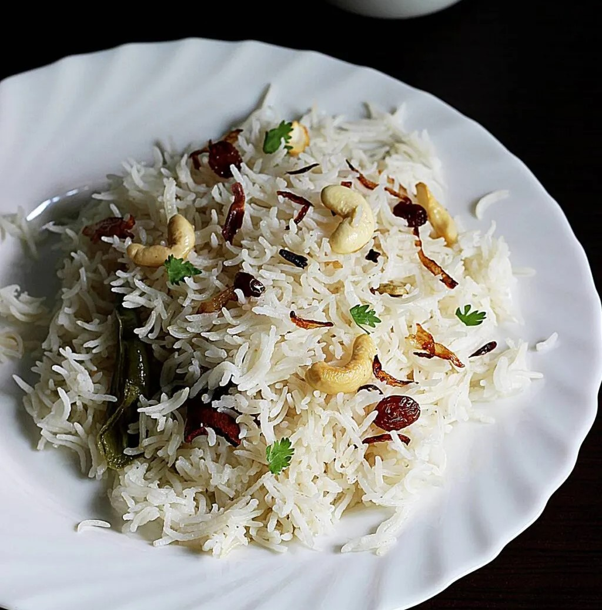

Ghee Rice

Ingredients:
- 1 cup basmati rice
- 2 cups water
- 2 tbsp ghee (clarified butter)
- 1 small onion, thinly sliced
- 1-2 bay leaves
- 2-3 cloves
- 1-inch cinnamon stick
- 2-3 green cardamom pods
- 1/4 tsp cumin seeds
- Salt to taste
- Fresh coriander leaves for garnish
Instructions:
- Rinse the basmati rice under cold water until the water runs clear. Soak the rice for about 20-30 minutes, then drain it well.
- In a large pan or pressure cooker, heat the ghee over medium heat.
- Add the cumin seeds, bay leaves, cloves, cinnamon stick, and cardamom pods. Sauté for about 1-2 minutes until fragrant.
- Add the sliced onions and sauté until golden brown and crispy, about 5-6 minutes.
- Add the soaked and drained rice to the pan and gently stir it to coat with the ghee and spices. Sauté for about 2-3 minutes.
- Add water and salt. Bring it to a boil, then reduce the heat to low, cover, and cook for 10-12 minutes or until the rice is tender and the water is absorbed. (If using a pressure cooker, cook for one whistle on medium heat and then let it rest for 5 minutes.)
- Fluff the rice gently with a fork. Garnish with fresh coriander leaves and serve warm.